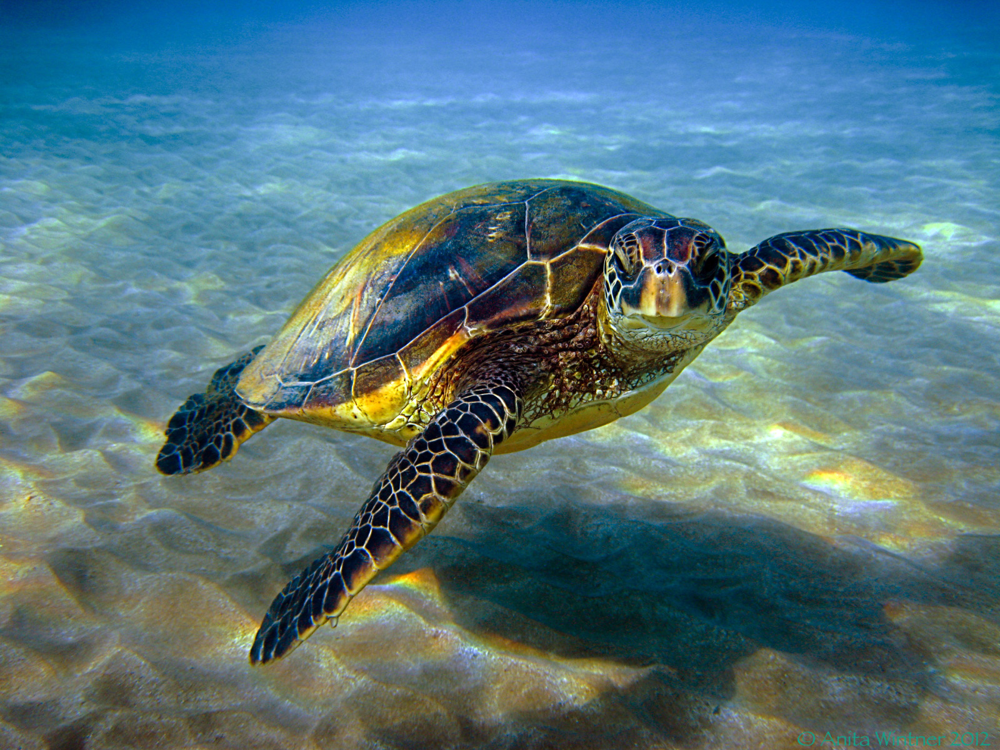

Penyu adalah hewan yang banyak di temukan bertelur di beberapa pesisir pantai di Indonesia sejak dahulu.
Ikan Badut
Ikan Badut ini dapat dikenali dengan warna jinggganya, ikan ini tumbuh mencapai 8 cm serta termasuk dalam ikan terpopuler didunia.

Lion Fish atau Volitans adalah ikan berbisa milik kelurga yang scorpaenidae terjemahan harfiah berarti ikan kalajengking.

Ikan Moorish Idol adalah salah satu ikan yang cukup populer di kalanagan para hoobiis ikan hias karena bentuknya yang unik dan pola warnanya yang menarik.